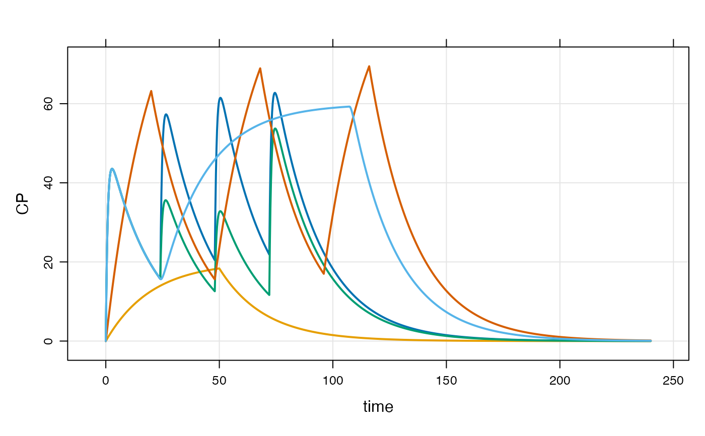
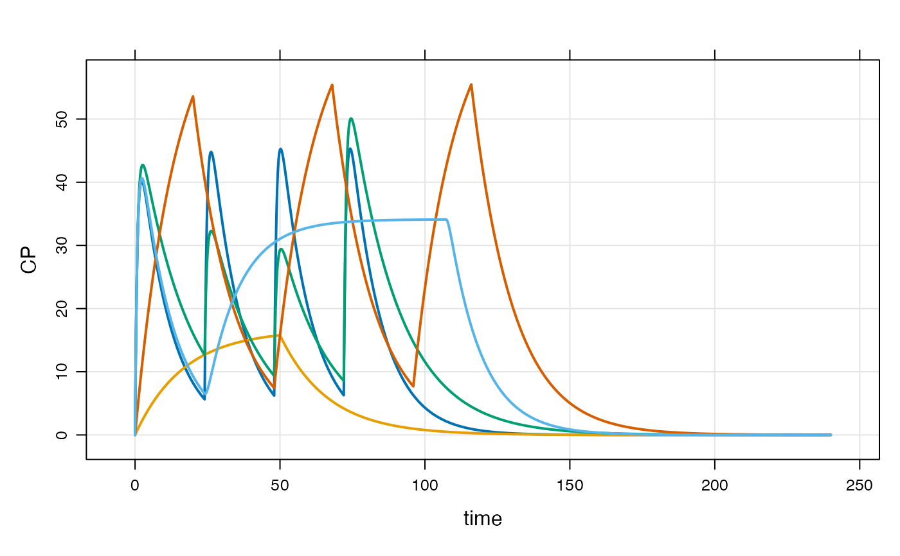

Example input data sets
data(exidata) data(extran1) data(extran2) data(extran3) data(exTheoph) data(exBoot)
Details
exidataholds individual-level parameters and other data items, one per rowextran1is a "condensed" data setextran2is a full datasetextran3is a full dataset with parametersexTheophis the theophylline data set, ready for input intomrgsolveexBoota set of bootstrap parameter estimates
Examples
mod <- mrgsolve:::house() %>% update(end=240) %>% Req(CP) ## Full data set data(exTheoph) out <- mod %>% data_set(exTheoph) %>% mrgsim out#> Model: housemodel #> Dim: 132 x 3 #> Time: 0 to 24.65 #> ID: 12 #> ID time CP #> 1: 1 0.00 0.00000 #> 2: 1 0.25 0.04552 #> 3: 1 0.57 0.08624 #> 4: 1 1.12 0.12643 #> 5: 1 2.02 0.15072 #> 6: 1 3.82 0.15121 #> 7: 1 5.10 0.14348 #> 8: 1 7.03 0.13101plot(out)## Condensed: mrgsolve fills in the observations data(extran1) out <- mod %>% data_set(extran1) %>% mrgsim out#> Model: housemodel #> Dim: 4814 x 3 #> Time: 0 to 240 #> ID: 5 #> ID time CP #> 1: 1 0.00 0.00 #> 2: 1 0.00 0.00 #> 3: 1 0.25 12.87 #> 4: 1 0.50 22.25 #> 5: 1 0.75 29.04 #> 6: 1 1.00 33.91 #> 7: 1 1.25 37.37 #> 8: 1 1.50 39.78plot(out)#>#> #>#> #> #>#> #> #>#> #> #>data <- extran1 %>% distinct(ID) %>% select(ID) %>% mutate(CL=exp(log(1.5) + rnorm(nrow(.), 0,sqrt(0.1)))) %>% left_join(extran1,.)#>data#> ID amt cmt time addl ii rate evid CL #> 1 1 1000 1 0 3 24 0 1 0.9907996 #> 2 2 1000 2 0 0 0 20 1 2.4779311 #> 3 3 1000 1 0 0 0 0 1 0.8128070 #> 4 3 500 1 24 0 0 0 1 0.8128070 #> 5 3 500 1 48 0 0 0 1 0.8128070 #> 6 3 1000 1 72 0 0 0 1 0.8128070 #> 7 4 2000 2 0 2 48 100 1 1.1924668 #> 8 5 1000 1 0 0 0 0 1 1.7873321 #> 9 5 5000 1 24 0 0 60 1 1.7873321#> Model: housemodel #> Dim: 4814 x 4 #> Time: 0 to 240 #> ID: 5 #> ID time CL CP #> 1: 1 0.00 0.9908 0.00 #> 2: 1 0.00 0.9908 0.00 #> 3: 1 0.25 0.9908 12.88 #> 4: 1 0.50 0.9908 22.25 #> 5: 1 0.75 0.9908 29.05 #> 6: 1 1.00 0.9908 33.92 #> 7: 1 1.25 0.9908 37.38 #> 8: 1 1.50 0.9908 39.80plot(out)## idata data(exidata) out <- mod %>% idata_set(exidata) %>% ev(amt=100,ii=24,addl=10) %>% mrgsim plot(out, CP~time|ID)